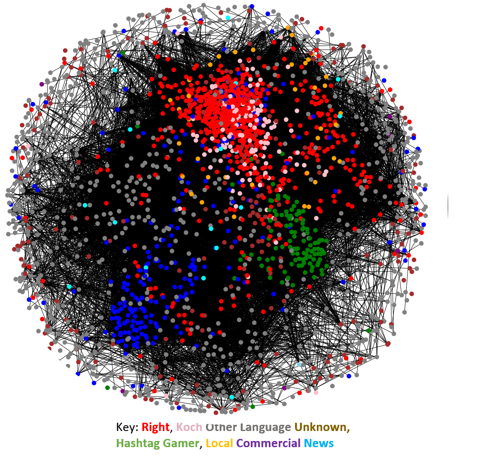
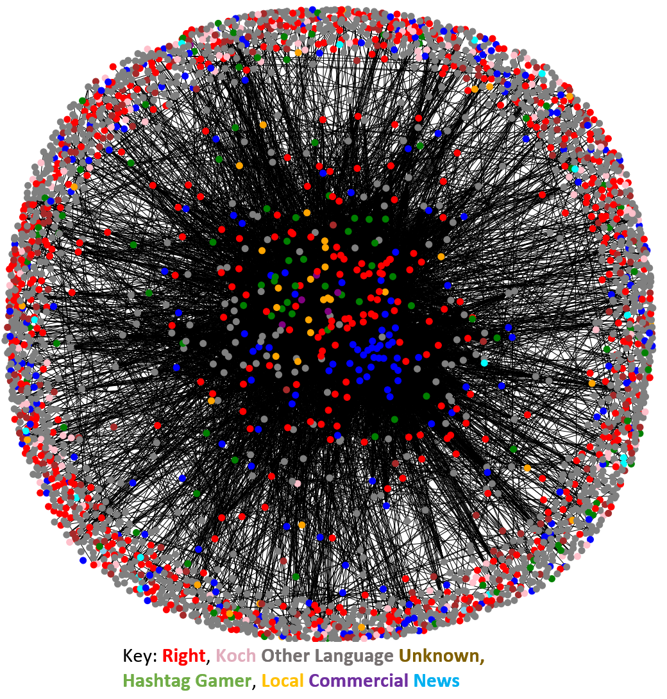
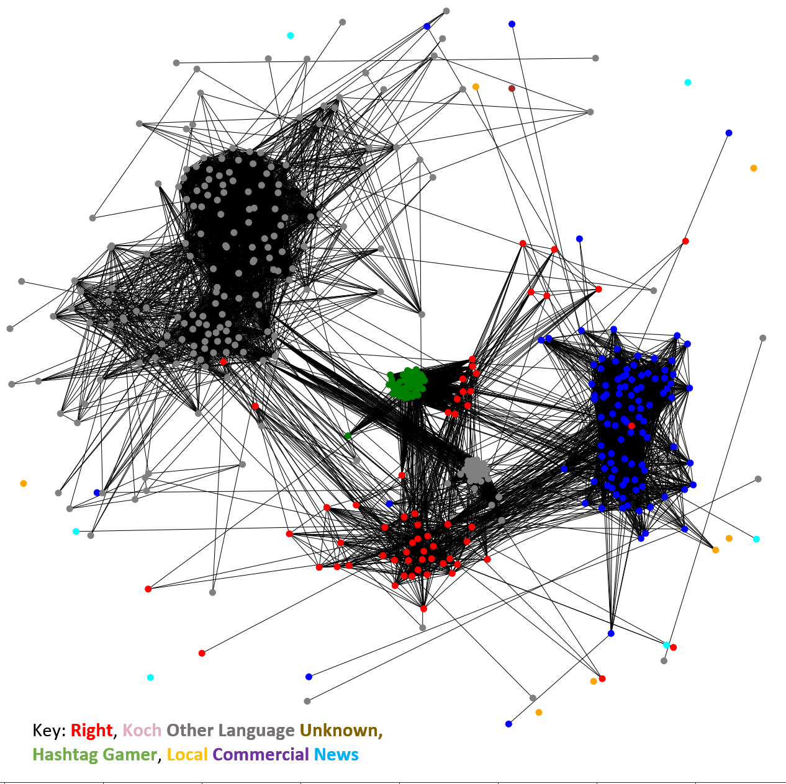
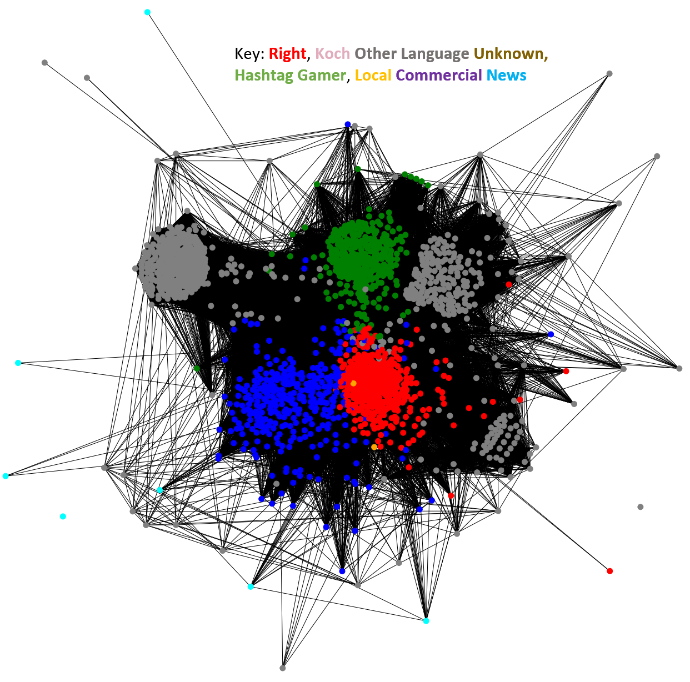

layout: true class: center --- class: middle background-color: white .title[IRA Troll Accounts] .subtitle[Exploring their use and coordination] .author[Laila A. Wahedi, PhD] .date[November 29, 2018] .institution[MDI, McCourt School of Public Policy, Georgetown University] <img style="width:20%" src="../figures/seal.png"> .center[] .footnote[ Created with [{Remark.js}](http://remarkjs.com/) using [{Markdown}](https://daringfireball.net/projects/markdown/) + [{MathJax}](https://www.mathjax.org/) + [{Liminal}](http://www.jmlilly.net/liminal.zip) ] --- layout: true name: main class: center .footnote_left[ » Slides at https://wahedi.us under <i>Current Presentation</i> ] .footnote_right[ Laila A. Wahedi • @lwahedi • law98@georgetown.edu ] --- template: main class: middle background-color: #78881f <h2 style="text-transform: none; text-align:left; margin-bottom:0px; color:white;">Russian Trolls</h2> <img class="plain" src="../figures/line.png" style="float:left; padding:0;margins:0;margin-bottom:0px; height: 5px; width:76%"><br> <h2 style="text-transform: none; text-align:left; color:white;">What can we learn about Russian information operations by observing their activity online?</h2> --- template: main background-color: #78881f <h2 style="text-transform: none; text-align:left; margin-bottom:0px; color:white;">Russian Trolls</h2> <img class="plain" src="../figures/line.png" style="float:left; padding:0;margins:0;margin-bottom:0px; height: 5px; width:76%"> <br> <h3 style="text-transform: none; text-align:left; color:white;">Data: ~3M tweets from ~3k known accounts from the Internet Research Agency</h3> <h4 style="text-transform: none; text-align:right; color:white;"> Released by FiveThirtyEight and <br>The Clemson Social Media Listening Center</h4> <h3 style="text-transform: none; text-align:left; color:white;">Do have</h3> <div style="width:31%; border: 5px solid #FFFFFF; border-radius: 25px; background-color:#01BAEF; float:left"> <h4 style = "color:white; margin:.5em">Tweet text and time</h4> </div> <div style="width:31%; border: 5px solid #FFFFFF; border-radius: 25px; background-color:#01BAEF; float:left"> <h4 style = "color:white; margin:.5em">Url redirects</h4> </div> <div style="width:31%; border: 5px solid #FFFFFF; border-radius: 25px; background-color:#01BAEF; float:left"> <h4 style = "color:white; margin:.5em">Is quote or retweet</h4> </div> <br> <div style="clear: both; float: left; display: block; position: relative; margin-top: 2em"> <h3 style="text-transform: none; text-align:left; color:white;display:inline-block;clear:both;">Don't have</h3> </div> <div style="clear: both; float: left; display: block; position: relative;width:100%"> <div style="width:31%; border: 5px solid #FFFFFF; border-radius: 25px; background-color:#AF002B; float:left"> <h4 style = "color:white; margin:.5em">Friends / Followers</h4> </div> <div style="width:31%; border: 5px solid #FFFFFF; border-radius: 25px; background-color:#AF002B; float:left"> <h4 style = "color:white; margin:.5em">Retweet user id</h4> </div> <div style="width:31%; border: 5px solid #FFFFFF; border-radius: 25px; background-color:#AF002B; float:left"> <h4 style = "color:white; margin:.5em">Interactions</h4> </div> </div> --- template: main background-color: #78881f <h2 style="text-transform: none; text-align:left; margin-bottom:0px; color:white;">What can we learn about how the IRA operated?</h2> <img class="plain" src="../figures/line.png" style="float:left; padding:0;margins:0;margin-bottom:0px; height: 5px; width:76%"> <br> <h2 style="text-transform: none; text-align:left; color:white;">How were accounts managed?</h2> <div style="width:100%; margin-bottom:1em; "> <div style="width:48%; float:left; background-color:#AF002B; border: 5px solid #FFFFFF; border-radius: 25px;margin-bottom:1em;"> <h4 style = "color:white;">Individual agents managing multiple accounts independently</h4> </div> <div style="width:48%; float:left; background-color:#6d288e; border: 5px solid #FFFFFF; border-radius: 25px;margin-bottom:1em;"> <h4 style = "color:white;">Many accounts created for coordinated purposes</h4> </div> </div> <div style="width:100%; margin-top:1em; "> <h2 style="text-transform: none; margin-top:1em; text-align:left; color:white;"> <br>Expect:</h2> <div style="width:48%; float:left; background-color:#AF002B; border: 5px solid #FFFFFF; border-radius: 25px;"> <h4 style = "color:white;">Clusters of accounts with the same rhetoric/language</h4> </div> <div style="width:48%; float:left; background-color:#6d288e; border: 5px solid #FFFFFF; border-radius: 25px;"> <h4 style = "color:white;">Larger clusters of accounts of accounts with similar rhetoric</h4> </div> </div> --- template: main background-color: #01BAEF <h2 style="text-transform: none; text-align:left; margin-bottom:0px; color:white;">Calculating Rhetorical Similarity: How?</h2> <img class="plain" src="../figures/line.png" style="float:left; padding:0;margins:0;margin-bottom:0px; height: 5px; width:76%"> <br> <div style="width:100%; float:left"> <div style="width:33%; float:left"> <h4 style = "color:white; ">1. Create Author Vectors</h4> </div> <div style="width:33%; float:left"> <h4 style = "color:white; ">2. Calculate Distance</h4> </div> <div style="width:33%; float:left"> <h4 style = "color:white; ">Weighted/ Thresholded</h4> </div> </div> <div style="width:100%; "> <h2 style="text-align:right; margin-top:12em; color:white;">Relate authors by rhetoric </h2> </div> --- template: main background-color: #78881f <h2 style="text-transform: none; text-align:left; margin-bottom:0px; color:white;">Russian Trolls</h2> <img class="plain" src="../figures/line.png" style="float:left; padding:0;margins:0;margin-bottom:0px; height: 5px; width:76%"> <br> <div style="width:65%; float:left">  </div> <div style="width:34%; float:left"> <ul style="color: white;text-align:left"> <li>Large, loose clusters corresponding to category coding</li> <li>No identifiable authors (small clusters with very similar author vectors</li> <li>Suggests coordinated campaigns</li> </ul> </div> --- template: main background-color: #78881f <h2 style="text-transform: none; text-align:left; margin-bottom:0px; color:white;">Troll Coordination: Strategy</h2> <img class="plain" src="../figures/line.png" style="float:left; padding:0;margins:0;margin-bottom:0; height: 5px; width:76%"> <h2 style="text-transform: none; text-align:left; margin-bottom:0px; color:white;"><br>Mueller Indigtment: Goal was to infiltrate political movements to sew distrust in institutions</h2> <br> <h2 style="color:white;">How did they do it?</h2> <div style="width:48%; float:left; background-color:#AF002B; border: 5px solid #FFFFFF; border-radius: 25px;margin-bottom:1em"> <h4 style = "color:white;">Spy Strategy: Individually gain trust in existing networks?<br> </h4> </div> <div style="width:48%; float:left; background-color:#6d288e; border: 5px solid #FFFFFF; border-radius: 25px;margin-bottom:1em"> <h4 style = "color:white;">Organizer Strategy: Jointly interact to create reputable network?</h4> </div> </div> <div style="width:100%; margin-top:1em; "> <h3 style="text-transform: none; text-align:left; color:white;"><br>Expect to see... </h3> <div style="width:48%; float:left; background-color:#AF002B; border: 5px solid #FFFFFF; border-radius: 25px;"> <h4 style = "color:white;">Low levels of interaction among accounts.</h4> </div> <div style="width:48%; float:left; background-color:#6d288e; border: 5px solid #FFFFFF; border-radius: 25px;"> <h4 style = "color:white;">High levels of interaction and mutual promotion.</h4> </div> </div> --- template: main background-color: #78881f <h2 style="text-transform: none; text-align:left; margin-bottom:0px; color:white;">Challenge: Measuring Promotion</h2> <img class="plain" src="../figures/line.png" style="float:left; padding:0;margins:0;margin-bottom:0px; height: 5px; width:76%"> <h3 style="text-transform: none; text-align:left; color:white;display:inline-block;clear:both;">Don't have</h3> </div> <div style="clear: both; float: left; display: block; position: relative;width:100%"> <div style="width:31%; border: 5px solid #FFFFFF; border-radius: 25px; background-color:#AF002B; float:left"> <h4 style = "color:white; margin:.5em">Friends / Followers</h4> </div> <div style="width:31%; border: 5px solid #FFFFFF; border-radius: 25px; background-color:#AF002B; float:left"> <h4 style = "color:white; margin:.5em">Retweet user id</h4> </div> <div style="width:31%; border: 5px solid #FFFFFF; border-radius: 25px; background-color:#AF002B; float:left"> <h4 style = "color:white; margin:.5em">Interactions</h4> </div> </div> <div style="width:100%; margin-top:1em; "> <h3 style="text-transform: none; text-align:left; color:white;"><br>Three Approaches </h3> <div style="width:31%; float:left; background-color:#AF002B; border: 5px solid #FFFFFF; border-radius: 25px;"> <h4 style = "color:white;">Link Each Other<br> </h4> </div> <div style="width:31%; float:left; background-color:#6d288e; border: 5px solid #FFFFFF; border-radius: 25px;"> <h4 style = "color:white;">Link Same Content<br> </h4> </div> <div style="width:31%; float:left; background-color:#ff9900; border: 5px solid #FFFFFF; border-radius: 25px;"> <h4 style = "color:white;">Share Same Tweet (Retweet?)</h4> </div> </div> <div style="width:100%; margin-top:1em; "> <h3 style="text-transform: none; text-align:left; color:white;"><br>Expect to see... </h3> <div style="width:31%; float:left; background-color:#AF002B; border: 5px solid #FFFFFF; border-radius: 25px;"> <h4 style = "color:white;">Dense, not strongly clustered</h4> </div> <div style="width:31%; float:left; background-color:#6d288e; border: 5px solid #FFFFFF; border-radius: 25px;"> <h4 style = "color:white;">Dense, some clustering</h4> </div> <div style="width:31%; float:left; background-color:#ff9900; border: 5px solid #FFFFFF; border-radius: 25px;"> <h4 style = "color:white;">Highly clustered by category</h4> </div> </div> --- template: main background-color: #78881f <h2 style="text-transform: none; text-align:left; margin-bottom:0px; color:white;">Link Each Other</h2> <img class="plain" src="../figures/line.png" style="float:left; padding:0;margins:0;margin-bottom:0px; height: 5px; width:76%"> <br> <div style="width:65%; float:left"> </div> <div style="width:34%; float:left"> <ul style="color: white;text-align:left"> <li>As expected, links to tweets are not strongly clustered</li> <li>Even negative content promotes tweets and credibility</li> </ul> </div> --- template: main background-color: #78881f <h2 style="text-transform: none; text-align:left; margin-bottom:0px; color:white;">Link Same Content</h2> <img class="plain" src="../figures/line.png" style="float:left; padding:0;margins:0;margin-bottom:0px; height: 5px; width:76%"> <br> <div style="width:65%; float:left">  </div> <div style="width:34%; float:left"> <ul style="color: white;text-align:left"> <li>Surprisingly little clustering among mutual links</li> <li>Surprisingly dense</li> </ul> </div> --- template: main background-color: #78881f <h2 style="text-transform: none; text-align:left; margin-bottom:0px; color:white;">Same Tweet (Retweets?)</h2> <img class="plain" src="../figures/line.png" style="float:left; padding:0;margins:0;margin-bottom:0px; height: 5px; width:76%"> <br> <div style="width:65%; float:left">  </div> <div style="width:34%; float:left"> <ul style="color: white;text-align:left"> <li>Very strong clustering along type</li> <li>Much smaller network</li> <li>Core of mutually-promoting accounts, others excluded</li> </ul> </div> --- template: main background-color: #78881f <h2 style="text-transform: none; text-align:left; margin-bottom:0px; color:white;">To what extent were accounts coordinated?</h2> <img class="plain" src="../figures/line.png" style="float:left; padding:0;margins:0;margin-bottom:3em; height: 5px; width:76%"> <div style="width:48%; float:left; background-color:#AF002B; border: 5px solid #FFFFFF; border-radius: 25px;margin-bottom:1em"> <h4 style = "color:white;">Did trolls communicate a unified message?</h4> </div> <div style="width:48%; float:left; background-color:#6d288e; border: 5px solid #FFFFFF; border-radius: 25px;margin-bottom:1em"> <h4 style = "color:white;">How organized was their message?</h4> </div> </div> <div style="width:100%; margin-top:1em; "> <h3 style="text-transform: none; text-align:left; color:white;"><br>If well coordinated, expect to see... </h3> <div style="width:48%; float:left; background-color:#AF002B; border: 5px solid #FFFFFF; border-radius: 25px;"> <h4 style = "color:white;">Trolls promoting similar message</h4> </div> <div style="width:48%; float:left; background-color:#6d288e; border: 5px solid #FFFFFF; border-radius: 25px;"> <h4 style = "color:white;">Similar patterns of promotion over time</h4> </div> </div> --- template: main background-color: #01BAEF <h2 style="text-transform: none; text-align:left; margin-bottom:0px; color:white;">Topic Bipartite Network </h2> <img class="plain" src="../figures/line.png" style="float:left; padding:0;margins:0;margin-bottom:0px; height: 5px; width:76%"> <div style="width:100%"> <div style="width:33%; float:left"> <h3 style = "color:white; ">1. Topic Model</h3> </div> <div style="width:33%; float:left">  <h3 style = "color:white; ">2. Ties from user to topic</h3> </div> <div style="width:33%; float:left"> <h3 style = "color:white; ">3. Optional: Project to unipartite</h3> </div> </div> <div style="width:100%; "> <h2 style="text-align:right; margin-top:10em; color:white;">What makes authors similar? <br> How do topics relate?</h2> </div> --- template: main background-color: #78881f <h2 style="text-transform: none; text-align:left; margin-bottom:0px; color:white;">Hashtags Over Time</h2> <img class="plain" src="../figures/line.png" style="float:left; padding:0;margins:0;margin-bottom:0px; height: 5px; width:76%"> <br> <div style="width:65%; float:left"> <img style="width:100%;max-height:100%" src="../figures/net_text/dynamic_troll_bipart.gif"> </div> <div style="width:34%; float:left"> <ul style="color: white;text-align:left"> <li>Clusters by type link to clusters of hashtags</li> <li>Coordinated use of hashtags over time</li> </ul> </div> --- template: main background-color: #78881f <h2 style="text-transform: none; text-align:left; margin-bottom:0px; color:white;">Unipartite Projection: Hashtags</h2> <img class="plain" src="../figures/line.png" style="float:left; padding:0;margins:0;margin-bottom:0px; height: 5px; width:76%"> <br> <div style="width:65%; float:left">  </div> <div style="width:34%; float:left"> <ul style="color: white;text-align:left"> <li>Clear clustering of hashtag use by account type</li> <li>Suggests coordinated messaging</li> </ul> </div> --- template: main background-color: #F2DC5D <h2 style="text-transform: none; text-align:left; margin-bottom:0px; color:black;">Questions?</h2> <img class="plain" src="../figures/line.png" style="float:left; padding:0;margins:0;margin-bottom:0px; height: 5px; width:76%"><br> <h4 style = "color:black; ">Icons made by or adapted from Freepik from www.flaticon.com is licensed by CC 3.0</h4>